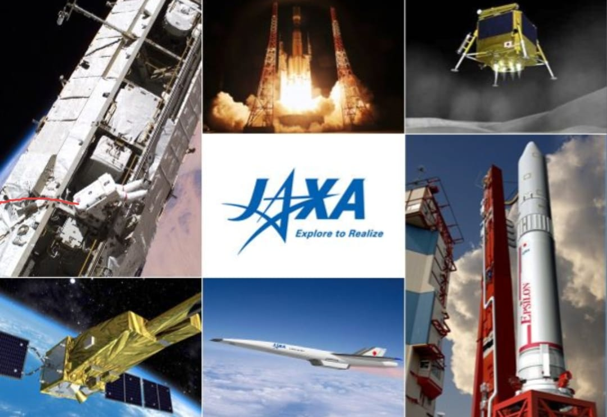

The Japan Aerospace Exploration Agency (JAXA) is Japan’s national space agency. It was formed in 2003 by merging three space organisations and is headquartered in Tokyo.

JAXA conducts research in space science, Earth observation, satellite development, and space exploration. It has contributed significantly to the International Space Station through the Kibo laboratory module, which is Japan’s experiment facility on the ISS.
JAXA is known for its advanced robotics and asteroid exploration missions. The Hayabusa and Hayabusa2 missions successfully collected samples from asteroids and returned them to Earth, a major scientific achievement.
JAXA also studies climate change, natural disasters, and environmental monitoring through Earth-observation satellites. It works closely with NASA, ESA, and other space agencies on joint missions.
With its focus on precision technology and peaceful space exploration, JAXA plays an important role in global space research and innovation.